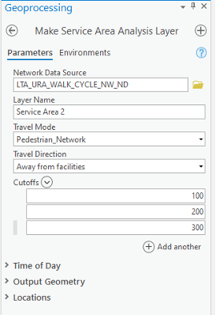
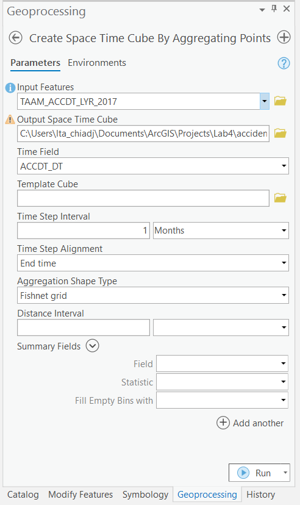
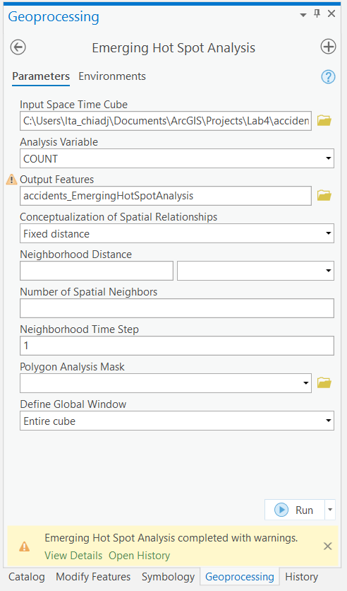
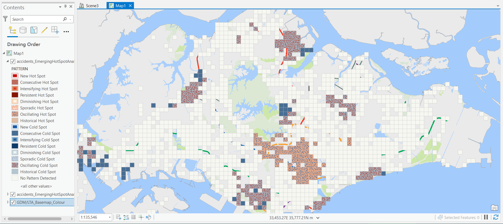
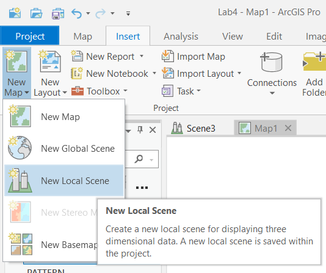
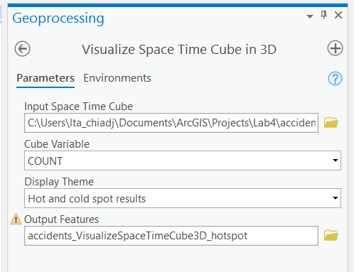
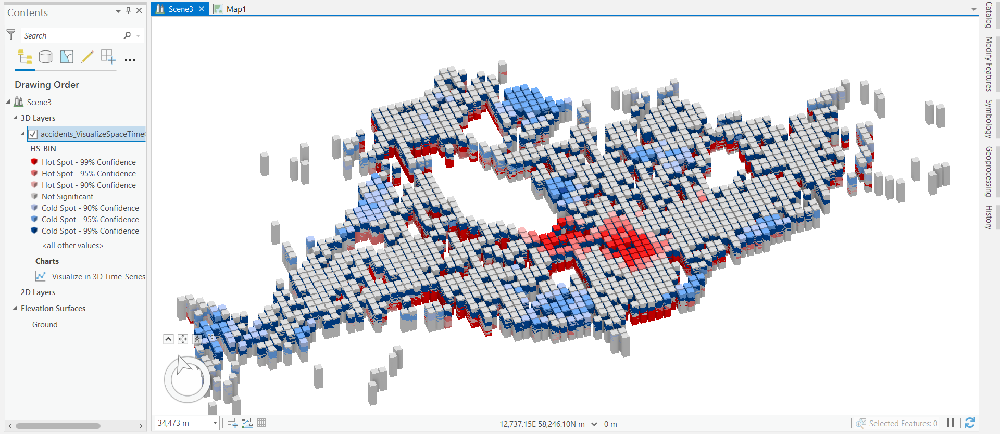
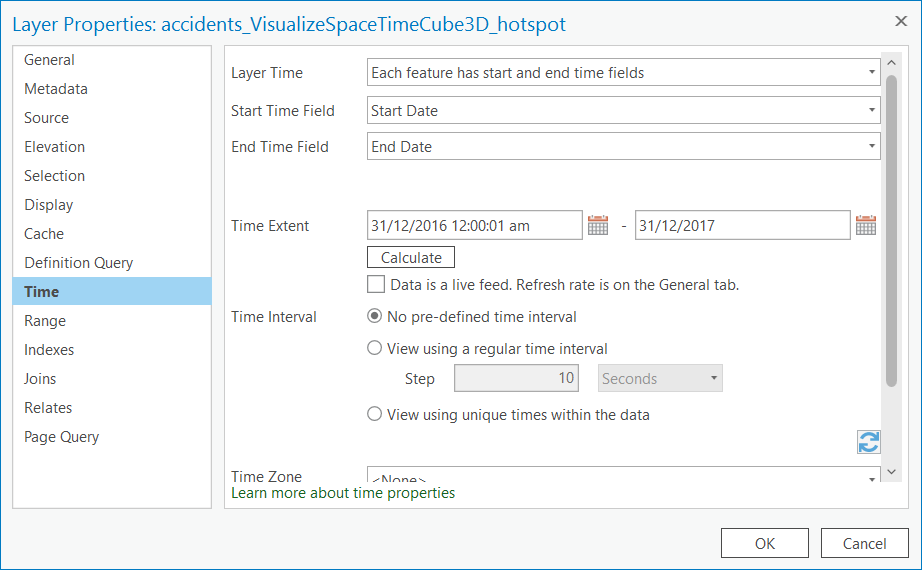
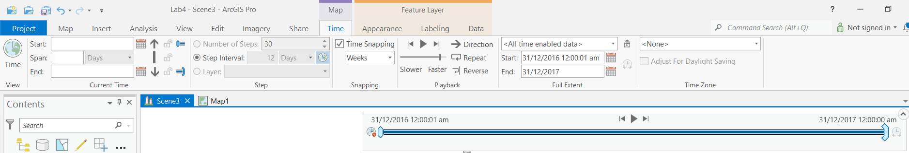

Lab Practice #4
Learning Objectives
In this lab exercise, you will learn the following:
- Proximity and Overlay analysis
- Space-time analysis using Space time pattern mining tools
Data required:
Lab4data.gdbcontainingLTA_URA_WALK_CYCLE_NW_FDnetwork datasetPLANNEDFACILITIES_RESTRICTEDpoint feature class containing the locations of current and upcoming healthcare institutionsPedestrianOverheadBridgepolygon feature classTAAM_ACCIDENT_LYRpoint feature class
Case Study
Read the news article from MOT below (Source):
Oral Reply by Senior Parliamentary Secretary for Transport Baey Yam Keng to Parliamentary Question on the Update for the Number of Lifts Installed at Pedestrian Overhead Bridges
Mr Darryl David asked the Minister for Transport
a. whether he can provide an update on the number of lifts installed at pedestrian overhead bridges across Singapore in 2021;
b. how does this number compare to the number of lifts installed in 2019 and 2020; and
c. what is the projected annual number of lifts that will be installed at pedestrian overhead bridges for the next three years.
Reply by Senior Parliamentary Secretary Baey Yam Keng:
As of end 2021, a total of 77 pedestrian overhead bridges or (POBs) have been retrofitted with lifts as part of the Land Transport Authority’s (LTA) lift retrofitting programme. Of these, 26 and 4 POBs were retrofitted with lifts in 2021 and 2020 respectively.
In 2018, LTA completed Phase 2 of its lift retrofitting programme for 41 POBs, primarily near public transport nodes. LTA was preparing for Phase 3 of the lift retrofitting programme in 2019. Preparatory works such as site investigations and technical studies have to be done before commencing construction, hence it takes about 14 to 22 months to retrofit lifts at POBs.
Phase 3 focuses on POBs near places such as healthcare institutions so that lifts installed will benefit a high number of seniors and commuters with mobility challenges. This phase, which started from 2020, will see around 60 POBs being retrofitted with lifts. The remaining 30 lifts will be installed progressively over the next three years.
In this exercise, you will identify the Pedestrian Overhead Bridges (POBs) that will be designated for installation of lifts under Phase 3 of LTA's lift retroffiting programme.
4.1 Proximity and Overlay Analysis
-
Download
lab4data.gdbfromOneDrive\Daily Practicesfolder. It is about 109 MB and may take a while to download. -
Create a map called
Phase 3 Lift Retrofitting Programme. -
Add the Ignite Colour Basemap to the map.
-
Add the
PedestrianOverheadBridgeandPLANNEDFACILITIES_RESTRICTEDfeature classes fromLab4data.gdbonto the map. Study the datasets. -
Next, we will identify POBs that are within a 100, 200 and 300 walking distance from a healthcare institution.
Enter the following inputs into the Make Service Area Analysis Layer geoprocessing tool and run the tool.
- Network Data Source:
LTA_URA_WALK_CYCLE_NW.gdb\LTA_URA_WALK_CYCLE_NW_FD\LTA_URA_WALK_CYCLE_NW_ND - Layer Name:
Service Area - Travel Mode:
Pedestrian Network - Travel Direction:
Away from facilities - Cutoffs: 100, 200, 300 (enter one in each row)

- Network Data Source:
-
Click on the new Service Area layer in the Contents Pane.
A Tab Group Network Analyst in purple will appear. Click on the Service Area tab and click on Import Facilities.
-
The Add Locations window pop-up. Under Input Locations, select
PLANNEDFACILITIES_RESTRICTED. Leave all other options as it is and click OK. -
In the same Network Analyst Tab Group, click on Run to execute the network analyst.
-
You will see three overlapping service areas stemming out from each healthcare institution. You can add the
LTA_URA_WALK_CYCLE_NWpolyline feature class inLTA_URA_WALK_CYCLE_NW.gdbfor better spatial context.Food for thought
What do you think is the difference between the buffer tool and this service area tool you've just executed?
-
Given the service areas, you now want to identify the POBs within them that does not have lifts installed in them yet. These POBs will be targeted under Phase 3 of LTA's lift retroffiting programme.
Open the Spatial Join geoprocessing tool and enter the following inputs:
- Target Features:
PedestrianOverheadBridge - Join Features:
Service Area\Polygons - Output Feature Class:
POB_SpatialJoin - Join Operation:
Join one to one -
Uncheck the Keep All Target Features option.
Tip
This will ensure that only POBs that intersect in a Service Area will be added to the
POB_SpatialJoinfeature class. -
Match option:
Intersect
Click OK. Open the Attribute Table for the
POB_SpatialJoinfeature class. Take a look at the Lift Indicator field. As there are no POBs with a value ofYin this tool, we can assume that all the POBs here don't have lifts installed.Tip
You should have 34 features in
POB_SpatialJoin. If not, trace back and make sure you have followed the steps accurately. - Target Features:
4.2 Emerging Hot Spot Analysis (optional)
Aim
In this exercise, you will study the spatiotemporal trend of traffic accidents in Singapore.
-
Create a map titled
Traffic Accidentsand add the Ignite Colour Basemap to the map. -
Add a folder connection to
C:\Data for Hands On\LTA\Exercise 4\Exercise4.gdband add theTAAM_ACCDT_LYR_2017point feature class to the map. Study the dataset. -
Open the Create Space Time Cube by Aggregating Points geoprocessing tool and enter the following inputs:
- Input Features:
TAAM_ACCDT_LYR_2017 - Output Space Time Cube:
accidents.nc - Time Field:
ACCDT_DT

- Input Features:
-
Open the Emerging Hot Spot Analysis geoprocessing tool and enter the following inputs:
- Input Features:
accidents.nc - Analysis Variable:
COUNT

After the tool runs, you should be able to visualise the areas of hot and cold spots on the map.

For more information
You can learn more about the definition for each type of trend here: https://pro.arcgis.com/en/pro-app/2.8/tool-reference/space-time-pattern-mining/learnmoreemerging.htm
- Input Features:
4.3 Space-Time Analysis (optional)
In this step, you will explore TAAM_ACCDT_LYR_2017 in 3-D (with time as the third dimension).
-
Create a new Local Scene. Under the Insert tab, click New Map > New Local Scene

-
Open the Visualize Space Time Cube in 3D geoprocessing tool and enter the following inputs:
- Input Features:
accidents.nc - Cube Variable:
COUNT - Display Theme:
Hot and cold spot results

The result should be automatically added to your map.

- Input Features:
-
To visualise the Space Time Cube in 3D, you need to enable the Time option on the layer.
Double click the layer in the Contents Pane. Click on Time. Under Layer Time, select
Each feature has start and end time fields. Click OK.
-
A time slider will appear on the map.

Select the Time Tab under the Map Tab Group (in purple). In the Snapping group, check Time Snapping and select Weeks.

Feel free to move the left and right sliders to view the Space Time Cube across different periods of time.
Question
Can you identify the time periods where there are hot and cold spots?
Stretch goals (optional)
Open the Visualize Space Time Cube in 3D geoprocessing tool again. This time under Display Theme, select Value and click OK. Repeat the steps in the previous section.
Food for thought
What do you think each cell in the Space Time cube represents?